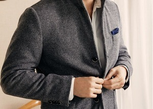
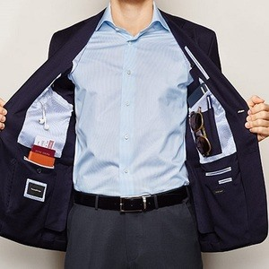

- YOU ARE HERE:
- HOME »
- GENERAL »
- EVERYTHING YOU NEED TO KNOW ABOUT TRAVEL JACKETS
Everything You Need To Know About Travel Jackets
People have been traveling since the beginning of time. The nature of this activity for every individual is entirely different. Some people like traveling for entertainment, some for business, and some for medical purposes.
There are countless other reasons why people visit different places. People in different parts of the world usually travel to areas that are the polar opposite of the regions they typically reside in which is understandable.

The reason for this is because they get to see new scenery and experience new weather and conditions. Experiencing all of these new and different things every once in a while freshens a person’s mind.
In This Article You Will Learn...
Why Travelling Was Uncomfortable In The Past Traveling Has Become Safer Now What Is A Travel Jacket? Skyrocketing Popularity Of Travel Jackets With The Kick Starter The Success Of Bauxbax On Kick Starter The Rise Of Similar Products Such As Plus Jackets How Travel Jackets Allow You To Maintain Discipline On The Go Features To Look Out For When Buying A Travel Jacket Lightweight Comfortable Good Looking Waterproof Perfect For All Kinds Of Weather Make Sure That The Fabric Is Breathable Cleaning Your Travel Jacket ConclusionWhy Travelling Was Uncomfortable In The Past
Even though travel was highly prevalent back in the day, it was neither easy nor comfortable to travel. There were limited means of transportation, and people did not know how to prepare for this activity.
It resulted in people getting ill, and in some cases, they even died. You have to ready yourself for the harshest and most extreme of conditions as you never know when the weather might change. The first mistake people made was that they did not know what kind of garments they should be carrying along with themselves while traveling.
They usually took the same clothes they wore back at home, not knowing that the weather in the other country might be extremely hot or cold. This lack of knowledge was also because there wasn't a lot of readily available information back in the day and people had to rely on word of mouth to get any knowledge.
As time went by, awareness increased and especially with the availability of the internet, all kinds of authentic information is available at a person's fingertips. Now, people know what garments they should be carrying with them, although some people could still make better choices.
Some garments are infinitely better than the others when it comes to protecting a person from the harmful elements the weather brings along. For example, wearing a sweater is quintessential for the winter season as it will keep you warm and make sure that your skin doesn't suffer significant damage.
Oppositely, wearing a sweater in summers, you will put yourself at the risk of exhaustion and profuse sweating; wearing a light material shirt would be a better choice for summers.
Similarly, if you live at a place where it rains continuously, it would be a wise choice to keep a couple of raincoats at your disposal, as they not only protect your clothing, but they also protect you from other harmful elements of the rain.
Travelers of this day and age are savvy enough to know most of these things, and nearly all of them pack accordingly. As we briefly mentioned earlier, travel was not easy back in the day, and people had to go through numerous hurdles to reach their destinations and come back.
Means of communication, transport, and essential safety items that we have in this day and age were not available back in the day, making the lives of travelers twice as hard.
It would be safe to say that most of the travelers in the old age were purely depending on their luck to reach their destination without any significant problem. You will be surprised to find out that pre-historic traveling has also been the source of a few plagues.
A healthy person would go to another country and catch some form of contagious illness or disease, he or she would then come back to their home country only to unknowingly spread the disease to hundreds and thousands of people.
Things have completely changed in this day and age, however, as you have to take many measures before even stepping foot in another country. The passage of time has given people extensive knowledge and wealth which has led them to make numerous discoveries and inventions to take better take care of themselves and their fellow beings.
Traveling Has Become Safer Now
Travel could not be any safer today, but some people in different parts of the world still do not feel safe while traveling. Numerous causes trigger a lot of discomfort among these travelers which is why they eventually hold themselves back from extensive touring. Despite that, not only is traveling safer, but it is much more comfortable.
The means of transportation are significantly better than they were back in the day and there are numerous options of transportation to choose from which is great. The ever-increasing number of travelers in recent years has made traveling a full-fledged business, which has been making considerable profits and showing no signs of stopping.
Because the traveling industry has significantly risen over the years, people scrutinize everything with great detail which has led to the creation of numerous traveling items that one thought were not possible a few years ago.
Protective clothing is one of the things that have risen to the occasion time and time again for travelers. People used to fill their bags with too much clothing whenever they were preparing to travel. It caused them to slightly overpack, which meant that either they had to get rid of some of their stuff or they had to pay some extra money and carry the heavy luggage around with them.
Thankfully, things have become more sophisticated now, and a few clothes do the trick for most people. Although these clothes are well and good and provide sufficient protection to people who are traveling, they still lack some essential elements that could make them the best traveling clothing out there.
Thankfully, we do not have to worry about waiting for the best traveling clothes out there. We are fortunate to have something that has all the potential of changing the traveling game for good once and for all. In case you are wondering what we are talking about, travel jackets are what we expect to be the traveling game changer.
What Is A Travel Jacket?
Traveling jackets have garnered a lot of buzz around them lately. They have proven to be extremely useful for people who do not want to pack loads of stuff with them before traveling. As we discussed earlier, touring used to be extremely difficult for people in the old days and they had to pack their suitcases with loads of clothes.
Traveling jackets eliminate all of these problems smoothly, as these jackets are substantially similar to a suitcase. Who wouldn't want to have a wearable bag with them at all times? There are different variations of travel jackets available in the market, all of them are specifically designed to provide ease and comfort to travelers at all times.
You can now say goodbye to heavy suitcases as travel jackets essentially eliminate the need of having many clothes. These jackets have numerous features and functions that people could not have even imagined previously.
On the surface, these jackets seem like every other jacket that you would see people wearing, but once you take a quick peek, you will soon discover the sophisticated design of the travel jacket. Their advanced design helps the travelers tremendously in carrying around their luggage.
It doesn't necessarily mean that your jacket could store all of the stuff your suitcase could; it means that you would not have to carry as much stuff as you used to previously and your heavy luggage will be adequately replaced with a lighter one.
Some of the features that make travel jackets a must-have for everyone are the multiple built-in pockets inside them. These pockets are placed strategically to make sure that people are easily able to reach out to their stuff and grab it with ease.
- A 10 to 12-inch tablet
- Multiple cell phones
- A 2 liter bottle
- Your passport and diary
- An inflatable pillow
- A mini camera
These pockets are also spacious, making sure that the jacket doesn't go through unnecessary wear and tear. If you are wondering what kind of items could the jacket hold, down below are just a few things among many others that these jackets can hold comfortably.
You would not be able to feel the weight of the items you are carrying around significantly as weight distribution of the travel jackets is on another level and a mystery to behold. The pockets alone are enough to make one want to get hold of these travel jackets as soon as possible, but you will find it surprising that we have barely scratched the surface of these travel jackets.
You wouldn't even need to carry around a pillow with you as travel jackets solve that problem by providing you with a built-in cushion which is present inside the travel jacket. The cushions are usually attached to the hood of the travel jacket, making it easy to rest your head at any place. You can comfortably sleep for hours on the pillows inside travel jackets.
Hand-warming pockets are another excellent function present inside traveling jackets. These come in especially handy for people who are going to countries that are extremely cold. You would also have access to an eye mask, making sure that your eyes are safe from numerous harmful elements. There is even a sunglass holder present in these traveling jackets.
You would not have to worry about your sunglasses falling off or carrying them separately. The sunglass holder holds the glasses with a smooth grip, and you can only remove them if you take them out yourself. The travel jacket also has earphone holders, and similar to the sunglass holders, they hold the earphones with a firm grip.
One of the most important things that we forgot to mention is the fact that some varieties of travel jackets have a specially designed pocket for power banks. In this day and age, it is almost impossible to go anywhere without your gadgets, such as cell phones, cameras, laptops, and tablets.
People who travel long distance are often concerned about the fact that they would not be able to charge their gadgets en route.
Well, the travel jackets prove to be the saving grace once again as the power bank pockets inside them make sure that you are easily able to charge your gadgets without looking for steady places to keep them. Everything would be on your body, and you would not have to fret about losing.
With the ability to store so much stuff, one might wonder how they could go to the airport without making the security wonder if they are smuggling something inside the jacket. Well, all we have to say to that is, do not worry.
The design these jackets have makes sure that the stuff you carry doesn't bulge out of your travel jacket. You will be easily able to take everything without people raising suspicion.
Some companies also provide travel footrest and travel blankets along with the travel jackets, offering you the ultimate care during your traveling expeditions. There are countless other items and features that the traveling jackets come along with and it would require a book to write all of the fantastic things that travel jackets are capable of doing.